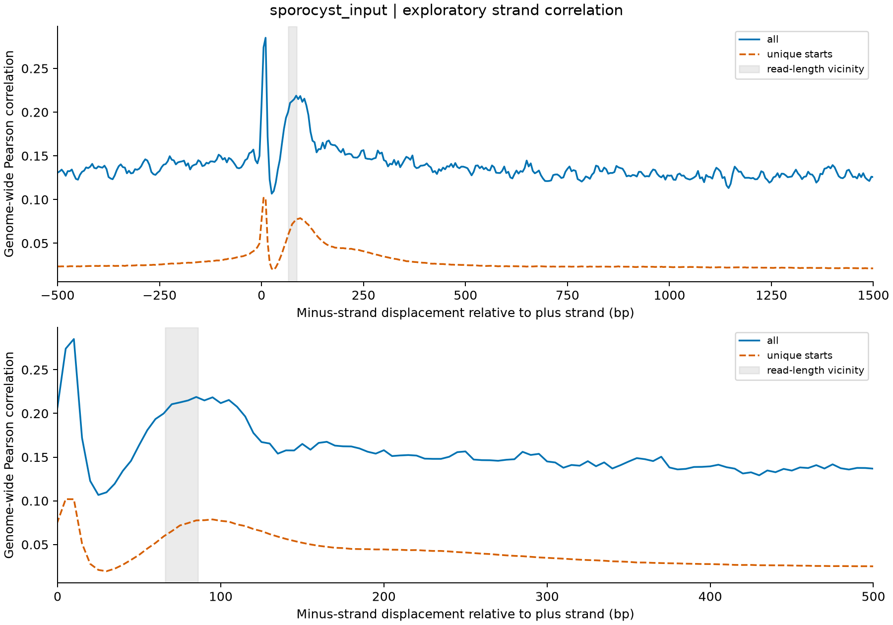
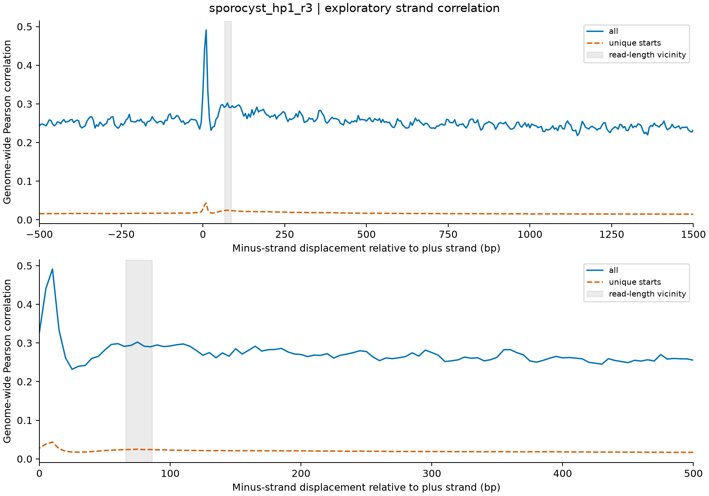
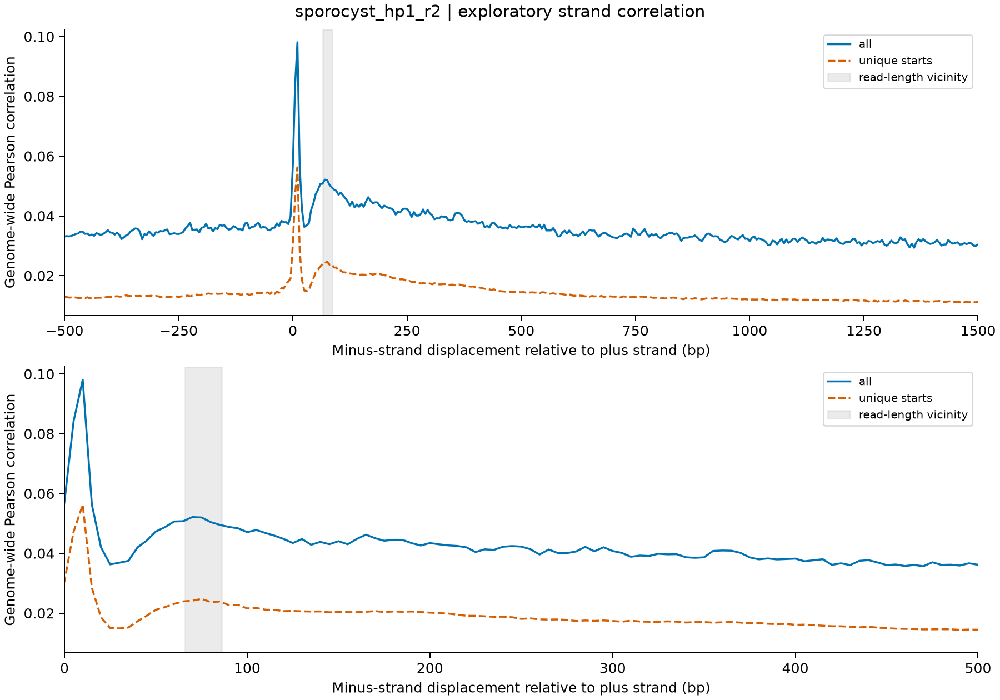
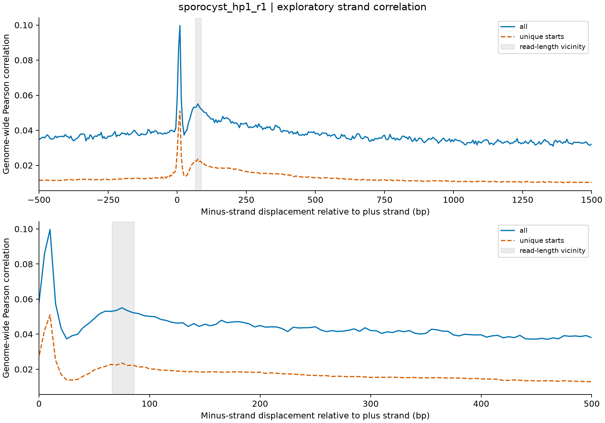
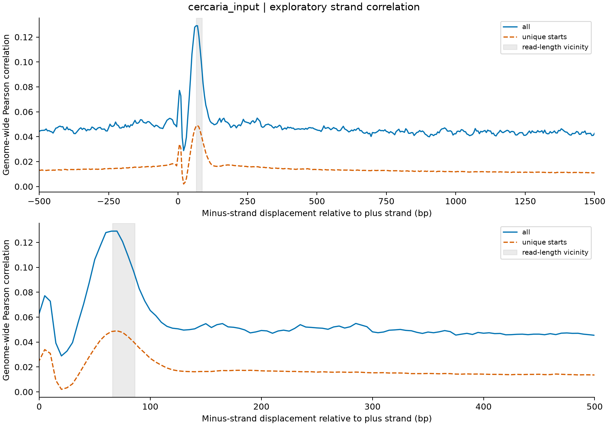
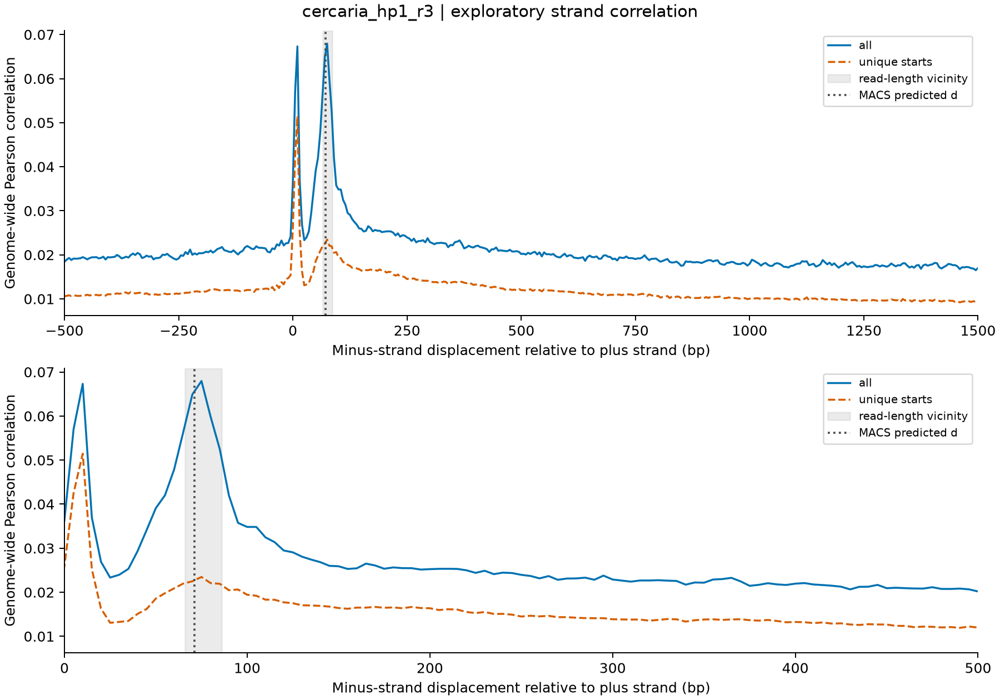
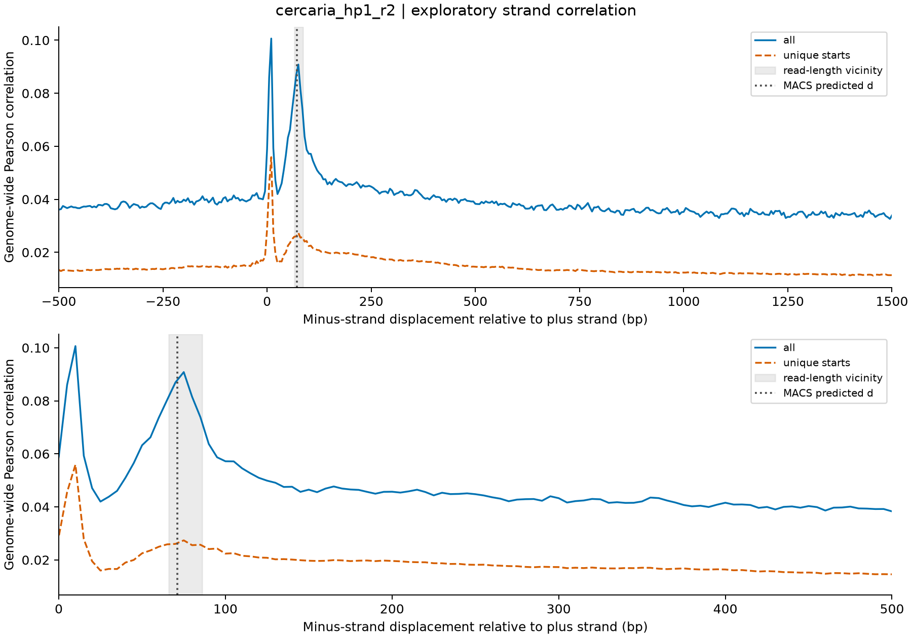
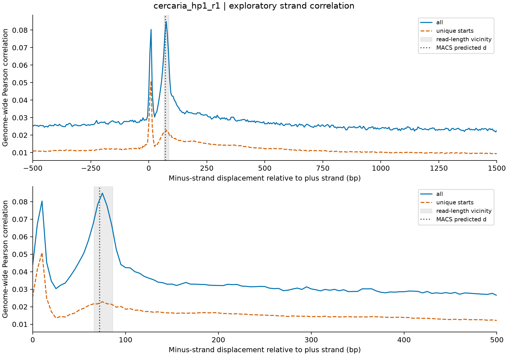

Exploratory QC supplement. Fragment length remains INCONCLUSIVE. These figures do not certify peak calling or biological replication.
Methods, interpretation and figure key
Blue: all eligible alignments. Orange dashed: unique 5′ starts. Gray: modal read length ±10 bp. Dotted: native MACS3 d when available. Y-axis scales differ between libraries.






strand_correlation.pdf · strand_correlation.tsv · SRR28402822.HP1.broad.macs3_model.pdf

strand_correlation.pdf · strand_correlation.tsv · SRR28402825.HP1.broad.macs3_model.pdf

strand_correlation.pdf · strand_correlation.tsv · SRR28402826.HP1.broad.macs3_model.pdf